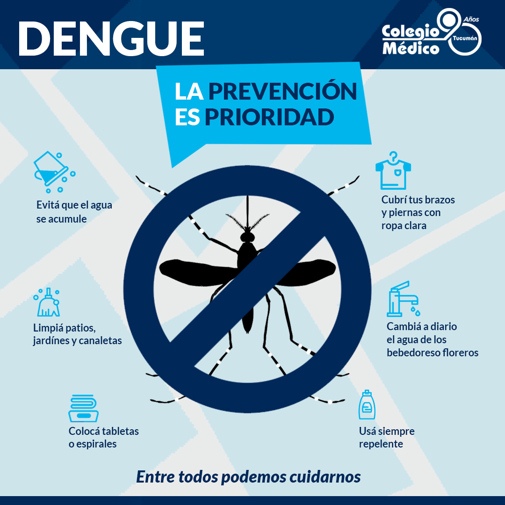
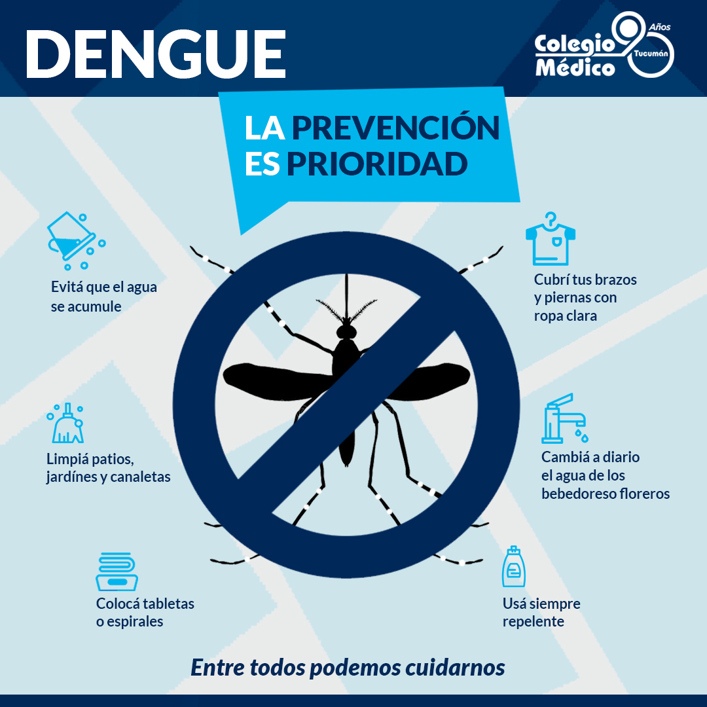

¿Qué es el dengue?
El dengue es causado por un virus que se transmite a través de la picadura del mosquito Aedes aegypti. Este mosquito se reproduce en agua estancada y suele picar durante el día.
El dengue es una enfermedad viral transmitida por mosquitos que afecta a millones de personas en todo el mundo. Aquí encontrarás información importante sobre sus síntomas, prevención y tratamiento.
 

El dengue es causado por un virus que se transmite a través de la picadura del mosquito Aedes aegypti. Este mosquito se reproduce en agua estancada y suele picar durante el día.
La mejor forma de prevenir el dengue es evitar la proliferación del mosquito. Algunas medidas importantes son:
No existe un tratamiento específico para el dengue. Se recomienda reposo, hidratación y control de la fiebre con medicamentos como el paracetamol. Es importante no automedicarse, especialmente con aspirina o ibuprofeno.